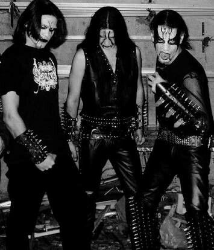
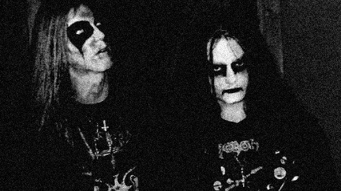
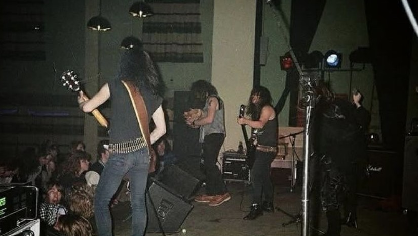
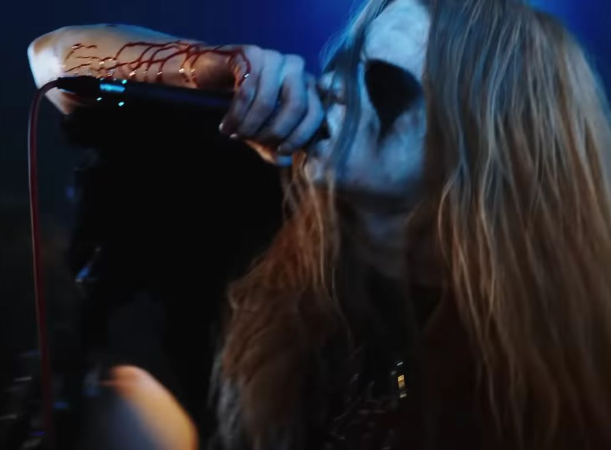

Overview
Black metal is an extreme subgenre of heavy metal music. Common traits include fast tempos, a shrieking vocal style, heavily distorted guitars played with tremolo picking, raw (lo-fi) recording, unconventional song structures, and an emphasis on atmosphere. Artists often appear in corpse paint and adopt pseudonyms.
History

The term "black metal" was coined by the English band Venom with their second album Black Metal (1982). Playing a style of speed metal or proto-thrash metal, the album initiated the "first wave of black metal". The band introduced many metaphors that became rampant in the genre, such as blasphemous lyrics and imagery, as well as stage names, costumes and face paint.] During this "first wave" of bands, black metal and other extreme metal styles like death metal were not well-defined genres. Swiss band Hellhammer made "truly raw and brutal music" with Satanic lyrics, and became an important influence on black metal. They recorded three demos in 1983 and released an EP in April 1984. Hellhammer then transformed into Celtic Frost and released their first album, Morbid Tales, later that year. With their second album, To Mega Therion (1985), the band began to explore "more orchestral and experimental territories." In these first years, Celtic Frost was considered one of the world's most extreme and original metal bands, significantly influencing the black metal genre.
Characteristics
Although black metal now typically refers to the Norwegian style with shrieking vocals, the term has been applied to bands with widely differing sounds, such as the Greek and Finnish bands that emerged around the same time as the Norwegian scene.
Gallery


